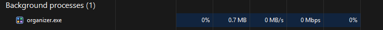
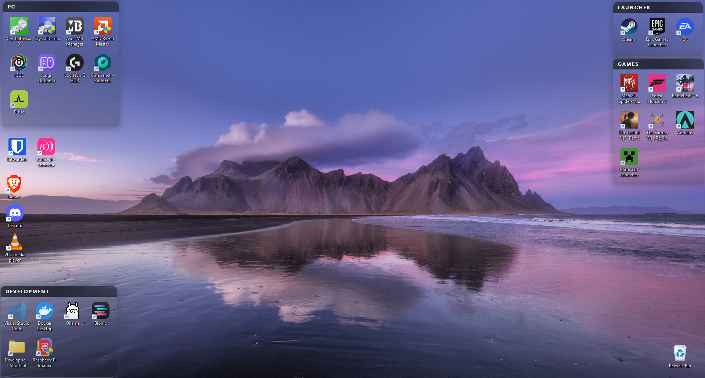
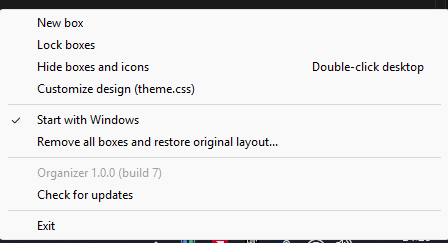

A free desktop icon organizer for Windows
Organizer puts your desktop icons into boxes. You drag icons into a box, move the box around, and the icons go with it. That's most of it.
It works on Windows 10 and 11, it's open source (MIT), and it uses about 2 MB of RAM because it draws everything natively instead of running a browser in the background.
No admin prompt. Remove it any time from Settings > Apps.


How to organize your desktop icons

After installing, Organizer sits in the system tray (sometimes behind the ^ arrow).
Right-click it and pick New box, then drag icons in. Double-click a box's title to
rename it.
Your files don't move. A box only controls where the real desktop icons are placed, so opening, renaming and right-clicking icons all work like before.
| Add or remove an icon | Drag it into or out of a box |
| Move a box | Drag the title bar |
| Resize a box | Drag the left, right or bottom edge |
| Roll a box up | Click the arrow on its title bar. Its icons tuck away until you click it again. |
| Hide everything | Double-click empty desktop space. Do it again to bring it back. |
| Hide the Recycle Bin | Tray menu > Settings... > Hide the Recycle Bin on the desktop |
| Stop accidental moves | Tray menu > Lock boxes |
| Undo it all | Tray menu > Remove all boxes and restore original layout |
Changing the look
The boxes are styled with a small theme.css file that you open from the tray menu.
Change --accent to recolor every box, or edit borders, glow, fonts and the title
bar. Saved changes show up within a second. A typo just gets ignored and noted in the log.
It's a subset of CSS, not a browser: there are no hover effects, animations or images. The supported properties are listed in the README.
Questions
Is it free?
Yes, and it'll stay that way. No ads, no account, no telemetry. The only thing it connects to is GitHub, to check for updates.
Is it an alternative to Stardock Fences?
It does the same basic thing, grouping icons into containers on the desktop. It doesn't try to copy every Fences feature.
Does it slow down games?
No. It barely uses any CPU, and it stops checking entirely while something is running fullscreen.
Anything that doesn't work well yet?
A few things. New files only land in a box if Windows happens to put them there. Changes made from another window can take up to 30 seconds to show. Mixed-DPI multi-monitor setups haven't been tested. And if you force-kill it instead of using Exit, Explorer can occasionally need a restart.